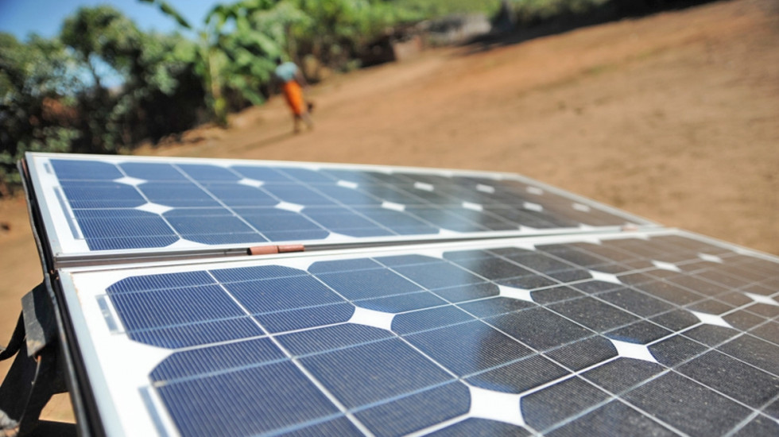

Helping to measure solar energy adoption across Madagascar via AI - Labelled Open solar panel data for Madagascar

This dataset will help data scientists, government and users to measure solar energy adoption across Madagascar. It laid the groundwork needed to develop a solar panel detection algorithm working in Madagaskar. Notably, this project represented all regions of the country; instead of focusing only on big cities, it also covered average and small villages as well as coasts and mountains.
The team annotated 2,125 Google Earth satellite images and 9,202 drone images, forming a combination of low and high-definition solar panel views in Madagascar. The Madagascar Initiatives for Digital Innovation (MAIDI) team performed field checks for up to 25% of satellite images and, in total, annotated 22,488 polygons.
Datasets
About
Powered by / Provided by: Association Maidi
Catalyzed by: Lacuna-Fund / Meridian (Climate-call) & FAIR Forward - AI for All, GIZ
Financed by: BMZ
Contact: Fabienne Rafidiharinirina (f.rafidiharinirina@association-maidi.mg), Association Maidi (assomaidi@gmail.com)